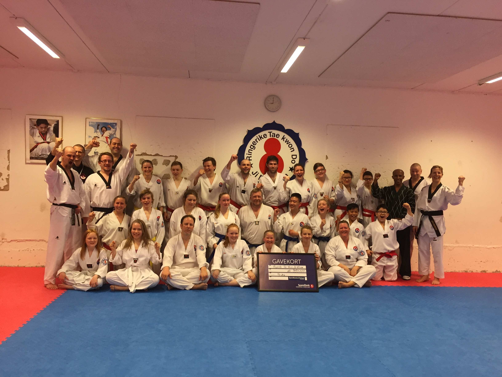
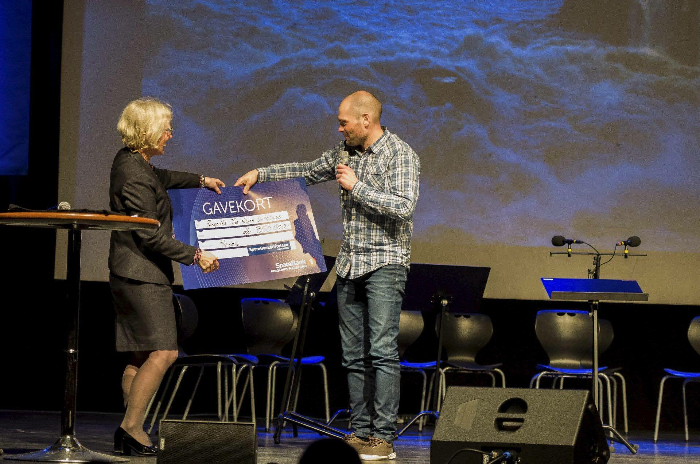
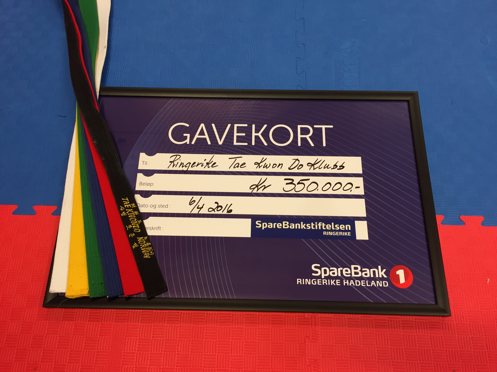
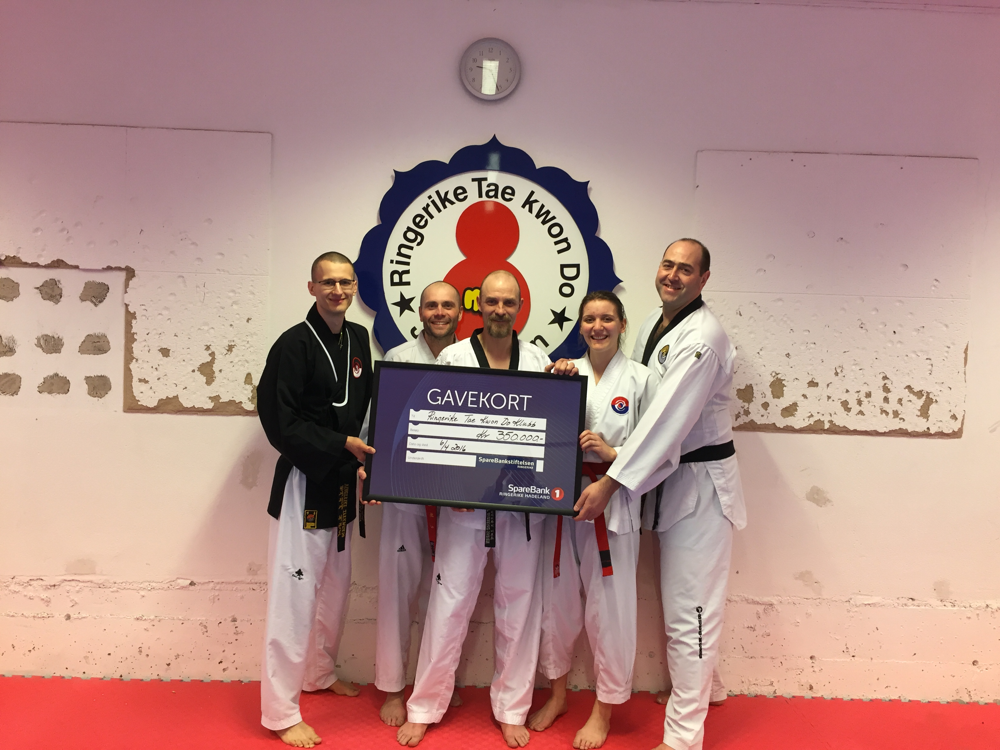
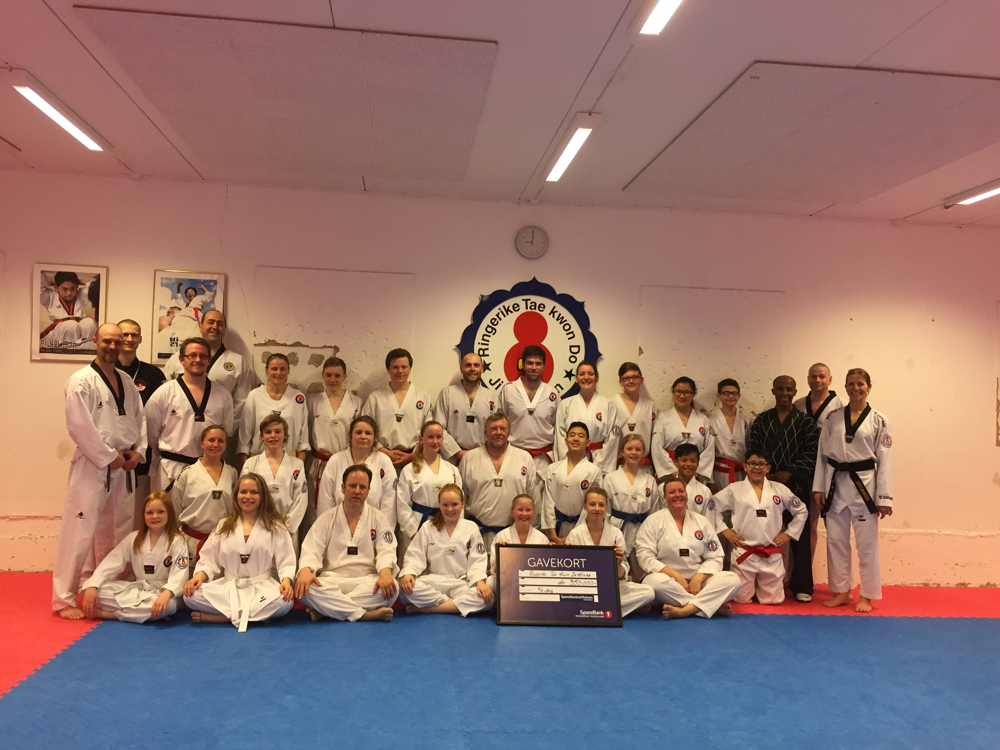
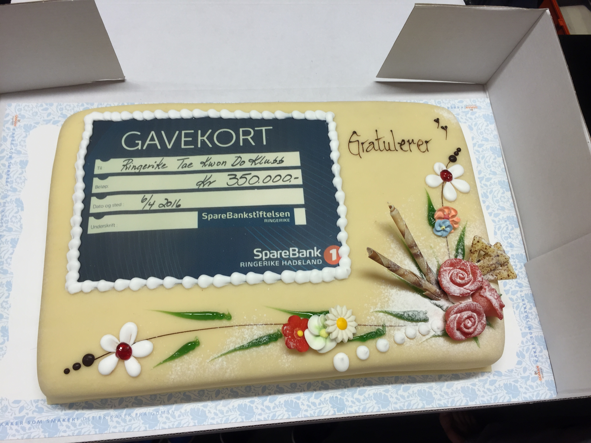

Innlegg
Sparebank 1 stiftelsen tildelte Ringerike TKD klubb 350.000

Onsdag 6.4.2016 ble en stor dag for klubben. Tor-Brede Rognlid var tilstede på bysenen under Sparebank 1 stiftelsens gavedryss. Med mange sommerfugler i maven satt han og hadde håpet for klubben om at vår søknad skulle bli tildelt støtte. Geir satt denne kvelden i en møte på kampsport forbundet, men sjekket hyppig telefon for oppdateringer fra Tor-Brede..
Klubben ble tildelt økonomisk støtte på 350.000 kroner til vårt prosjekt med å bygge en ny treningshall i Nordre Brukar. Dette er en støtte som gjør at vi nå håper å være i gang med byggingen på sen sommer / tidlig høst. Sammen med våre oppsparte midler så har vi nå over 550.000 i egenkapital. I tillegg jobbes det på spreng med å skaffe flere lokale sponsorer for å komme i mål med dette prosjektet.
Vi takker Sparebank 1 stiftelsen og skal jobbe hardt for å forvalte dette tilskuddet slik at mange barn, unge og voksne i distriktet får ta glede i fysisk aktivitet i vår klubb!
Vår sponsor Goman bakeriet spanderte boller til barna og en kake til de som var på trening torsdag kveld for å markere denne enorme hjelpen dette er til vårt prosjekt.
Her er noen bilder fra en glad gjeng!. Det kommer bilde fra barne partiene også, men vi må spørre foresatte om tillatelse til å ta bilde først.




